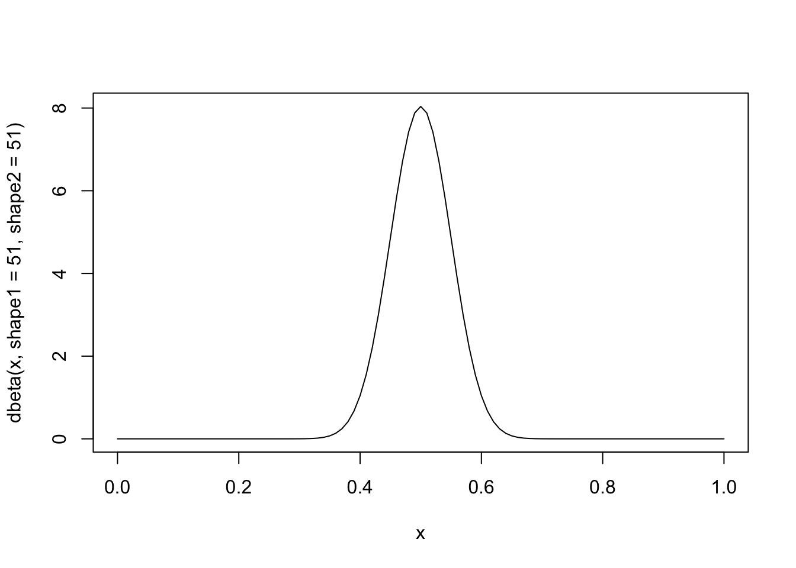
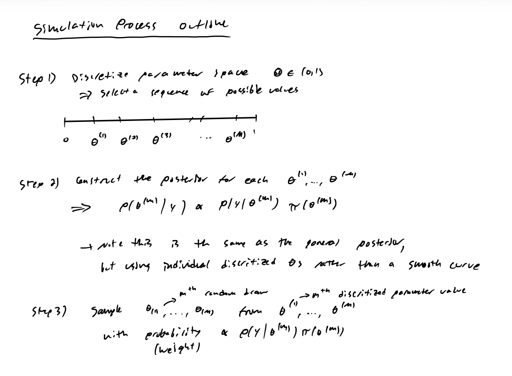
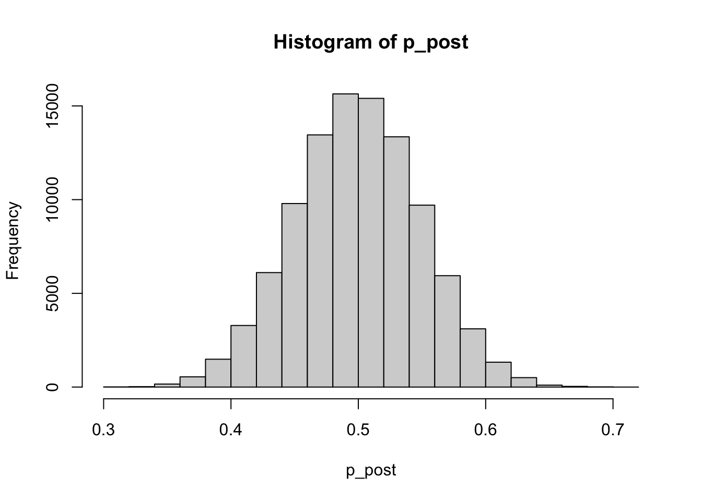
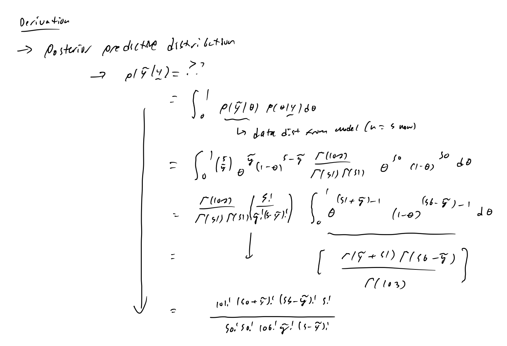
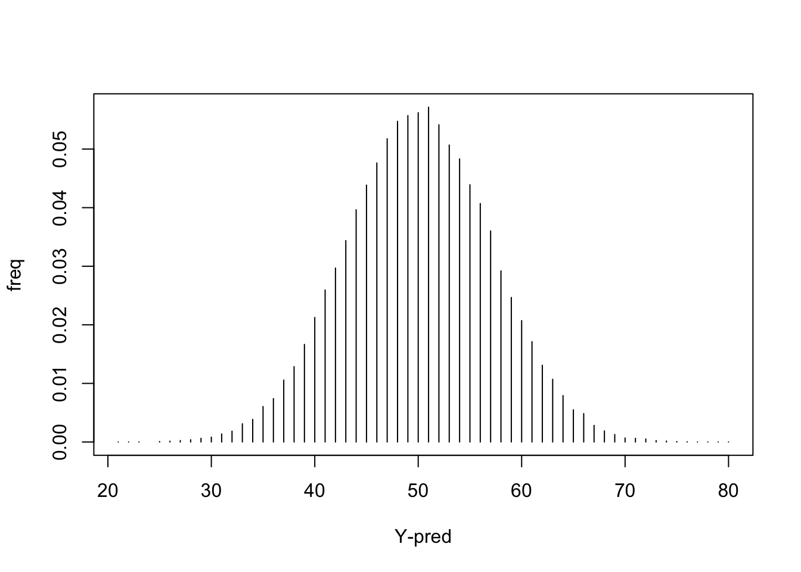
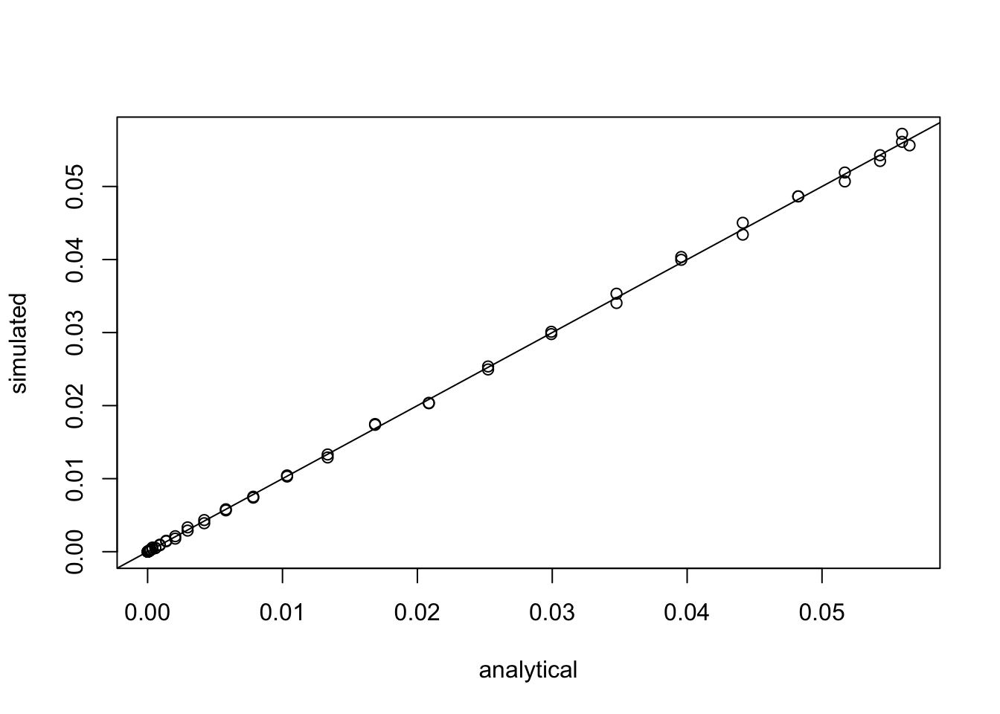
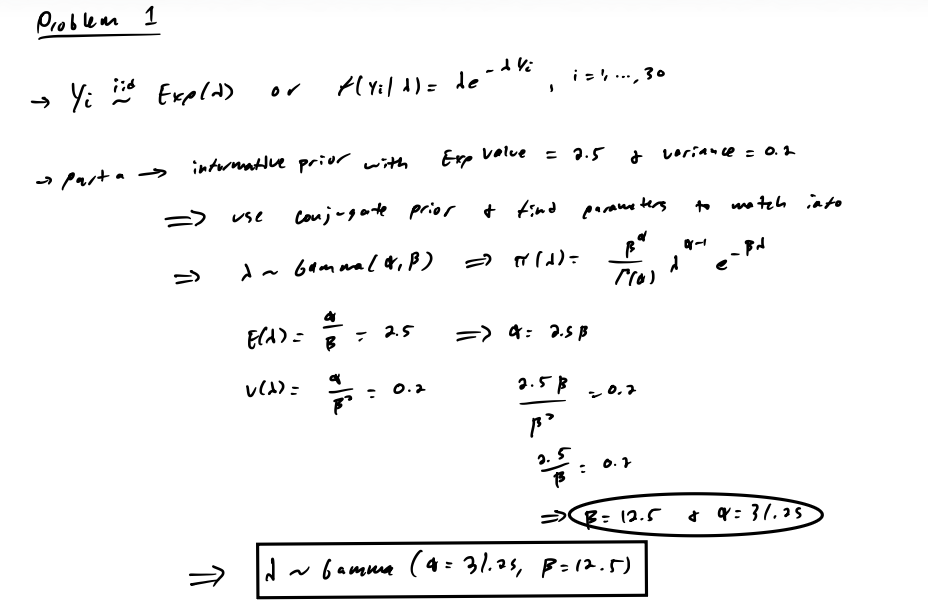
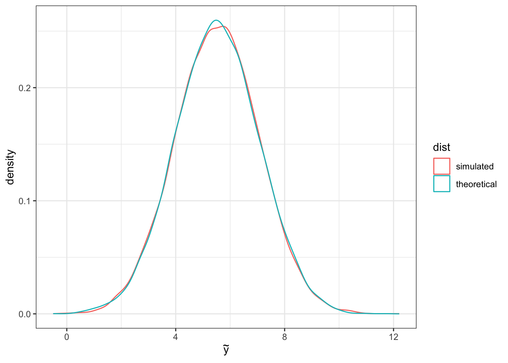

Notes
Lab
Setup
Let’s revisit the coin toss example today. We will work on it with multiple approaches. This time, let’s just assume we tossed the coin 100 times and get 50 heads (\(Y = 50\)).
- Data distribution: \(Y \mid p \sim Bin(100, p)\)
- Prior: \(p \sim \text{Uniform}(0,1)\)
- Observed data: \(y = 50\)
Step 1 – Estimation of parameters using known posterior distribution
If we know the math and used integration to find the posterior:
- Posterior: \(p \mid y = 50 \sim \text{Beta}(51, 51)\)
- Simulate the outcomes of the 100 tosses.
Step 2 – Estimation of parameters using simulation
Simulation is commonly used when the posterior doesn’t have an explicit form. This process is illustrated below (although this one does have a closed form solution that we can use to validate the results).
- Note that we can always write down the posterior distribution because it is just the product of the data distribution and the prior (which we always know / assume), but often the explicit form of the posterior is not a known form (e.g. \(\sim \text{Beta}\) or \(\sim \text{Normal}\).
If we do not know the math, we can still find the posterior, but we won’t have the exact posterior distribution, instead we are able to generate posterior samples. This is easy to implement and use when we have a simple model and single parameter.
-
Firstly, we create a sequence of possible values of the parameter (discretize the parameter space of \(p\)).
- Note that the method of discretizing the parameter space is not a very good method in practice and it cannot be used when the parameter space is unbounded.
-
Secondly, we construct the prior density values for each of the possible values and using Bayes Theorem, we combine the prior density and likelihood function into the posterior.
- Note that we would numerically sum the products of prior density and likelihood values to find the normalizing constant \(p(y)\).
Thirdly, simulate random draws from the approximate posterior distribution.

# 1) create a sequence of possible values for the parameter
p <- seq(from = 0.001, to = 0.999, by = 0.001)
# 2) construct the posterior, assuming y = 50 is observed
# => posterior = data dist * prior dist
# -> getting the functional value at each p
f_p_post <- dbinom(x = 50, size = 100, prob = p) * dunif(p)
# 3) simulate p from the posterior distribution
# -> randomly sample according to weights
n_sim <- 100000
p_post <- sample(x = p, size = n_sim, replace = TRUE, prob = f_p_post)
# view approximate distribution
hist(p_post)
Step 3 – Simulation-based prediction of future observations
You certainly can predict your future observations based on the posterior predictive distribution by doing the math here. But it is often difficult to analytically solve with calculus. On the opposite, it is fairly easy to get the posterior predictive distribution using simulation.
Note that we have simulated \(p\) from the posterior distribution and saved them in the vector p_post, so let’s directly use them and simulate the future observation conditional on each one of these \(p\)’s to get an idea of the posterior predictive distribution.
-
p_postcan also be simulated directly from \(\text{Beta}(51, 51)\) (the posterior distribution shown in the notes) viap_post = rbeta(nsim, 51,51). But the process described above is an approximation of simulating from this.
One toss: We already analytically figured out the posterior predictive distribution of 1 additional coin toss in class, so now we can numerically compare ̃the simulation vs analytical answer (\(P(\tilde{Y} = 1 \mid Y = 50) = 0.5\)):
# generate an experimental value of the coin toss for each of the n_sim = 100,000 values of p from the posterior distribution
# -> need to make sure that the number of predicted responses should match the number of posterior samples of the parameter!
y_pred_post_1_sim <- rbinom(n = n_sim, size = 1, prob = p_post)
# summarize the posterior predictive distribution
# -> frequency table of the future observations table
table(y_pred_post_1_sim)y_pred_post_1_sim
0 1
50115 49885 # calculate the naive posterior predictive distribution table using relative frequency
table(y_pred_post_1_sim) / length(y_pred_post_1_sim)y_pred_post_1_sim
0 1
0.50115 0.49885 5 tosses: Now let’s assume that we plan to toss the coin for another 5 times.
# same as above, except for 5 tosses
y_pred_post_5_sim <- rbinom(n = n_sim, size = 5, prob = p_post)
table(y_pred_post_5_sim)y_pred_post_5_sim
0 1 2 3 4 5
3431 16073 30519 30653 15849 3475 y_pred_post_5_sim
0 1 2 3 4 5
0.03431 0.16073 0.30519 0.30653 0.15849 0.03475 
# calculate analytical result
# -> y-pred_post | y-vec = 101! (50 + y-tilde)! (55 - y-tilde)! 5! / (50! 50! 106! y-tilde! (5 - y-tilde)!)
y_pred_post_5 <- function(y) {
factorial(101) * factorial(50+y) * factorial(55-y) * factorial(5) / (factorial(50) * factorial(50) * factorial(106) * factorial(y) * factorial(5-y))
}
# calculate probabilities for each possible y-tilde value (number of successes out of 5 tosses)
sapply(0:5, y_pred_post_5)[1] 0.03432732 0.15915395 0.30651872 0.30651872 0.15915395 0.03432732100 tosses: Let’s assume that we plan to toss the coin for another 100 times first.
# same as above, except for 100 tosses
y_pred_post_100_sim <- rbinom(n = n_sim, size = 100, prob = p_post)
# create pmf plot
# -> sort predicted values to match order returned from table()
plot(x = y_pred_post_100_sim %>% unique %>% sort,
y = y_pred_post_100_sim %>% table %>% as.numeric %>% divide_by(n_sim),
type = "h", xlab = "Y-pred", ylab = "freq")
# calculate analytical result
# -> (not simplifying to factorials) y-pred_post | y-vec = C(100,y-tilde) beta(51 + y-tilde, 51 - y-tilde) / beta(51, 51)
y_pred_post_100 <- function(y) {
choose(100,y) * beta(51+y,151-y)/beta(51,51)
}
# calculate probabilities for each possible y-tilde value (number of successes out of 100 tosses)
sapply(0:100, y_pred_post_100) [1] 1.117015e-19 3.797850e-18 6.560849e-17 7.675012e-16 6.837026e-15
[6] 4.945136e-14 3.023922e-13 1.607359e-12 7.578753e-12 3.218894e-11
[11] 1.246465e-10 4.443569e-10 1.470001e-09 4.542745e-09 1.318770e-08
[16] 3.613687e-08 9.385549e-08 2.318783e-07 5.466671e-07 1.233270e-06
[21] 2.668948e-06 5.552976e-06 1.112943e-05 2.152547e-05 4.024020e-05
[26] 7.281560e-05 1.277074e-04 2.173466e-04 3.593414e-04 5.777088e-04
[31] 9.039631e-04 1.377815e-03 2.047184e-03 2.967207e-03 4.197949e-03
[36] 5.800615e-03 7.832231e-03 1.033899e-02 1.334871e-02 1.686314e-02
[41] 2.085104e-02 2.524317e-02 2.993008e-02 3.476375e-02 3.956334e-02
[46] 4.412515e-02 4.823618e-02 5.169008e-02 5.430386e-02 5.593363e-02
[51] 5.648743e-02 5.593363e-02 5.430386e-02 5.169008e-02 4.823618e-02
[56] 4.412515e-02 3.956334e-02 3.476375e-02 2.993008e-02 2.524317e-02
[61] 2.085104e-02 1.686314e-02 1.334871e-02 1.033899e-02 7.832231e-03
[66] 5.800615e-03 4.197949e-03 2.967207e-03 2.047184e-03 1.377815e-03
[71] 9.039631e-04 5.777088e-04 3.593414e-04 2.173466e-04 1.277074e-04
[76] 7.281560e-05 4.024020e-05 2.152547e-05 1.112943e-05 5.552976e-06
[81] 2.668948e-06 1.233270e-06 5.466671e-07 2.318783e-07 9.385549e-08
[86] 3.613687e-08 1.318770e-08 4.542745e-09 1.470001e-09 4.443569e-10
[91] 1.246465e-10 3.218894e-11 7.578753e-12 1.607359e-12 3.023922e-13
[96] 4.945136e-14 6.837026e-15 7.675012e-16 6.560849e-17 3.797850e-18
[101] 1.117015e-19# compare to simulated results
# -> get the theoretical functional values for the unique simulated posterior predictive values
plot(x = y_pred_post_100_sim %>% unique %>% sort %>% sapply(y_pred_post_100),
y = y_pred_post_100_sim %>% table %>% as.numeric %>% divide_by(n_sim),
xlab = "analytical", ylab = "simulated")
abline(0,1)
# point estimation/prediction for the future observations
mean(y_pred_post_100_sim)[1] 50.00364 2.5% 97.5%
36 64 Compare the posterior predictive samples vs the prior predictive samples. First we need to simulate \(p\) from the prior distribution, then simulate the future observation conditional on each one of these \(p\)’s to get an idea of the prior predictive distribution.
# generate an experimental value of the future 100 tosses for each p
p_prior <- sample(x = p, size = n_sim, replace = TRUE, prob = dunif(p))
y_pred_prior_100_sim <- rbinom(n = n_sim, size = 100, prob = p_prior)
# calculate point estimate and interval
mean(y_pred_prior_100_sim)[1] 50.02462 2.5% 97.5%
2 98 Homework
Problem 1
Thirty randomly selected Chase customers in Cincinnati were interviewed about their experiences with Chase financial investment advising service back in 2016 and they reported the average waiting time (unit: days) until the first meeting with a financial advisor in their local branch (given below). Julia, the Chase marketing manager believes that these waiting times can be reasonably modeled with an exponential distribution, i.e., \(Y_1, \ldots, Y_{30} \overset{iid}\sim \text{Exp}(\lambda)\), or \(f(y_i \mid \lambda) = \lambda\mathrm{e}^{-\lambda y_i}\), where \(i = 1, \ldots, 30\).
y <- c(4.3,1.0,0.5,5.2,2.5,1.6,1.3,2.5,1.2,2.3,0.8,14.4,1.7,0.5,2.2,
4.5,2.7,1.2,5.5,2.6,0.2,0.6,2.1,0.6,1.9,3.8,1.1,5.2,2.1,2.0)Part a – Prior distribution
Julia considered a Bayesian analysis. From the historical data, on average the bank customers waited 2.5 days until their first meeting with the bank financial advisor. She assumed that the prior variance is 0.2. Please use this information to obtain an informative prior distribution for \(\lambda\).

Part b – Posterior distribution
Use the prior in (a), find the posterior distribution for \(\lambda\).

# needed calculation for posterior gamma(alpha, beta)
# -> beta-post = beta-prior + sum(y)
12.5 + sum(y)[1] 90.6Problem 2
Progesterone level is monitored for 30 randomly chosen pregnant sheep with singletons that are 80 days pregnant.
y <- c(3.8,5.0,4.5,4.2,5.5,5.8,4.6,5.3,7.2,5.7,6.0,6.3,4.8,5.6,4.9,
4.3,4.9,4.2,3.4,4.8,5.2,5.9,5.7,2.8,6.6,6.1,9.3,7.7,5.3,7.8)Jeff would like to model these measurements as normal responses from the same normal population, \(\text{N}(\mu,1.52)\). He also found out in literature that, for 80-days pregnant sheep with singletons, the average progesterone level should be centered around 8, and the range of such measurements is between 4 and 12.
Part a – Prior distribution
Please suggest a prior distribution of μ for Jeff based on the literature information.
See picture in part b.
Part b – Posterior distribution
Specify the posterior distribution parameters of \(\mu\).

Part c – Monte Carlo probability
Use the Monte Carlo approach to calculate \(P(\mu > 5 \mid \mathbf{y})\).
# generate sample from posterior distribution
# -> mu | y-vec ~ Normal(mu_n, tau^2_n)
mu_post_sample <- rnorm(n = 10000, mean = mu_n, sd = sqrt(tau2_n))
head(mu_post_sample, n = 5)[1] 5.559771 5.560613 5.738902 5.767248 5.497242# calculate Monte Carlo probability
# -> P(mu > 5 | y-vec)
(prob <- mean(mu_post_sample > 5))[1] 0.9787Using Monte Carlo methods, our estimate of \(P(\mu > 5 \mid \mathbf{y}) \approx\) 0.979
Part d – Posterior predictive distribution
A new sheep will be selected at random from the same population of interest. Simulate the posterior predictive distribution of the progesterone level of this new sheep. Report the estimated mean and standard deviation of the progesterone level for this new sheep based on the posterior predictive distribution you obtain.
Simulation approach

# simulate posterior predictive distribution
# simulate mu's from posterior mu | y-vec
M <- 10000
mu_m <- rnorm(n = M, mean = mu_n, sd = sqrt(tau2_n))
head(mu_m)[1] 5.141306 5.389154 5.502065 5.626392 5.427346 5.316044# simulate new observations from data distribution using newly sampled mu's
y_new <- rnorm(n = M, mean = mu_m, sd = sigma)
head(y_new)[1] 5.076336 4.281472 6.843715 6.604269 3.579661 4.013072# approximate mean and standard deviation of posterior predictive distribution
mean(y_new) [1] 5.527256var(y_new)[1] 2.365685Verify with known theoretical results.
Based on the derivations in the notes (part 3), for the normal model with unknown mean and known variance, the posterior predictive distribution \(\tilde{Y} \sim \text{Normal}(\mu_n, \sigma^2 + \tau^2_n)\).
# sample directly from the known posterior predictive distribution
y_new_theory <- rnorm(n = M, mean = mu_n, sd = sqrt(sigma^2 + tau2_n))
# compare simulated posterior predictive sample and that of the theoretical
# -> line up perfectly
data.frame(y_new = y_new, dist = "simulated") %>%
bind_rows(data.frame(y_new = y_new_theory, dist = "theoretical")) %>%
ggplot(aes(x = y_new,
color = dist)) +
geom_density() +
labs(x = expression(tilde(y)))
Problem 3
Jill is the data analyst at the Tristate Phoenix clinic, she randomly selected records of the BMI from female patients in the clinic (denoted by \(X_1, \ldots, X_{32}\)) and male patients (denoted by \(Y_1, \ldots, Y_{28}\)), and she assumed these two sets of records were independent normally distributed with means \(\mu_X, \mu_Y\) , and variances \(\sigma^2_X = \sigma^2_Y = 1\). Could you help her calculate a 95% credible interval (equal tails) for \(\mu_X − \mu_Y\), using the following priors \(\mu_X \sim \text{N}(\mu = 22, \sigma^2 = 4),\, \mu_Y \sim \text{N}(\mu = 20.5, \sigma^2 = 4)\) on \(\mu_X, \mu_Y\)?
x = c(22.7,21.5,23.1,21.7,23.2,22.4,20.3,23.7,23.2,22.3,24.3,
22.3,22.9,22.1,22.3,21.2,23.5,21.5,21.6,20.9,20.0,20.0,
21.1,24.1,22.6,22.2,21.3,20.8,22.0,22.9,23.2,20.5)
y = c(22.0,20.3,20.6,20.4,20.5,20.0,18.9,20.2,21.4,21.4,18.5,20.8,22.8,19.1,
18.8,19.7,21.0,20.2,21.3,20.5,19.2,20.6,20.1,18.9,20.9,19.6,21.3,21.4)Theoretical approach

# specify parameters, hyperparameters and other needed constants
sigma2_x <- 1
sigma2_y <- sigma2_x
mu_0_x <- 22
mu_0_y <- 20.5
tau2_0_x <- 4
tau2_0_y<- tau2_0_x
n_x <- length(x)
n_y <- length(y)
# calculate posterior parameters
tau2_n_x <- (n_x / sigma2_x + 1 / tau2_0_x)^(-1)
mu_n_x <- tau2_n_x * (sum(x) / sigma2_x + mu_0_x / tau2_0_x)
tau2_n_y <- (n_y / sigma2_y + 1 / tau2_0_y)^(-1)
mu_n_y <- tau2_n_y * (sum(y) / sigma2_y + mu_0_y / tau2_0_y)
# calculate parameters for distribution of difference of posteriors
# -> we know difference of normals is still normally distributed
diff_mean <- mu_n_x - mu_n_y
diff_var <- tau2_n_x + tau2_n_y
# calculate resulting equal tails interval
alpha <- 0.05
qnorm(c(alpha / 2, 1 - alpha/2), mean = diff_mean, sd = sqrt(diff_var))[1] 1.22779 2.23793[1] 1.228The 95% credible set for \(\mu_x - \mu_y\) is (1.228, 2.238).
Simulation approach
# simulate mu_X and mu_Y from each of the posterior distributions
M <- 10000
mu_post_sample_x <- rnorm(n = M, mean = mu_n_x, sd = sqrt(tau2_n_x))
mu_post_sample_y <- rnorm(n = M, mean = mu_n_y, sd = sqrt(tau2_n_y))
# take difference
mu_post_sample_x_minus_y <- mu_post_sample_x - mu_post_sample_y
# approximate equal tail intervals via quantiles of posterior sample
quantile(mu_post_sample_x_minus_y, probs = c(alpha / 2, 1 - alpha/2)) 2.5% 97.5%
1.230959 2.239184 # very close to theoretical results!Problem 4
Suppose \(Y \mid \theta \sim \text{Poisson}(\theta)\). Find the Jeffrey’s prior for \(\theta\).